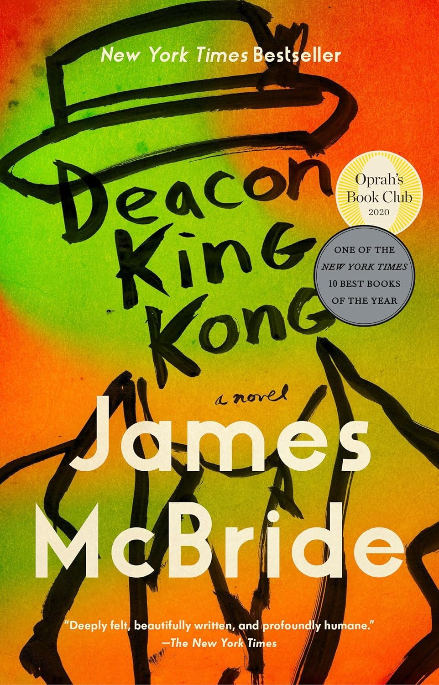

"Deacon King Kong: A Novel"
- Read on 2025-02-26
- Rating: ️️️️️
- Format: üéß (14 hours 5 minutes)
An enjoyable story of... life - life in the relatively small circle of the projects of New York City, with the intricacies of relationships, traditions, hopes, aspirations, expectations, disappointments, friendships, rivalries, and simply trying to get by. I enjoyed the descriptions and nuances of the people. I felt like I could see them, and better understand their feelings. All of it helps to share the story of a drug dealer being shot in broad daylight, with lots of witnesses, and how the neighborhood reacts to that event.
- Prior: Wind and Truth
- Next: Ancillary Justice